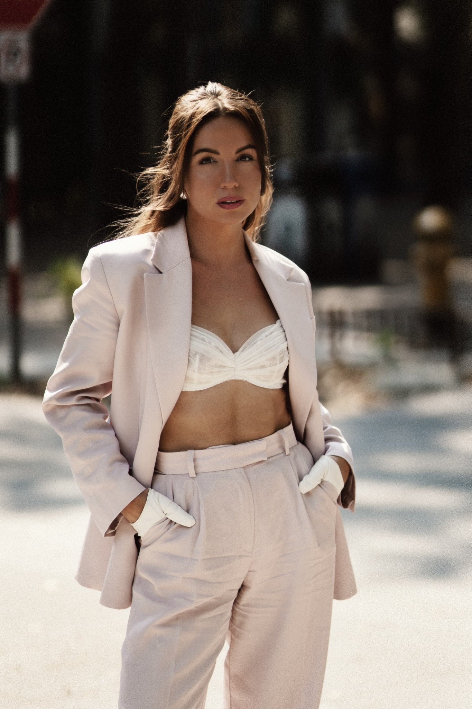

An editorial story · Seattle, WA
Seattle,
in frames.
Sometimes it's edgy. Sometimes it's soft. And sometimes it's both.
Explore the gallery ↓
A session with PALMA
One person. Many moods. The quiet moments, the confident ones, and everything in between.
Your story, through my lens
Let's make it
feel like you.
Personal portraits, motherhood, and family sessions — creatively directed, thoughtfully photographed.
Inquire about a session